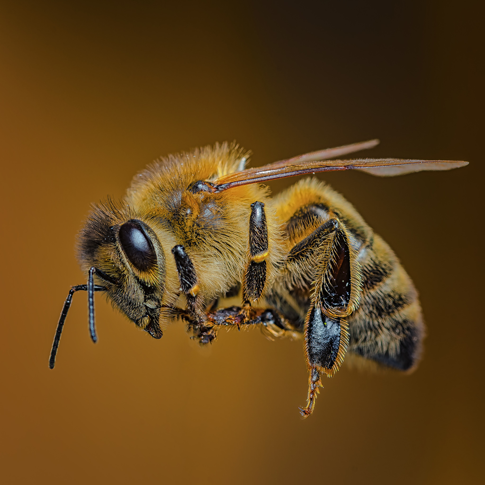
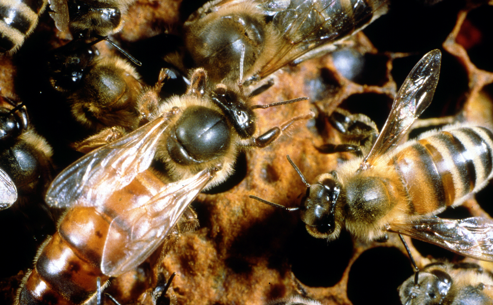

Včelí menu
O včelkách
Včely jsou sociální hmyzí živočichové, kteří patří do řádu blanokřídlí a čeledi včelovitých. Včely hrají důležitou roli v přírodě a jsou nezbytné pro opylování mnoha rostlin, včetně plodin, které lidé konzumují.
Typicky se včely dělí na tři základní druhy: královnu, dělnice a samečky. Královna je zodpovědná za snášení vajíček a řízení hejna. Dělnice jsou zodpovědné za sběr nektaru a pylu, stavbu a údržbu hnízda a péči o larvy. Samečci mají za úkol oplozovat královnu a zajišťovat reprodukci hejna.
Včely žijí ve velkých komunitách, které se nazývají úly. V úlech si vytvářejí své hnízdo z vosku, který vytvářejí samy. Včely jsou velmi dobře organizované a spolupracují v týmu. Každá včela má svou roli a pracuje na podpoře celkového zdraví a blaha hejna.
Včely také produkují med, který je velmi důležitým zdrojem potravy pro lidi i zvířata. Včelí med obsahuje mnoho prospěšných látek, jako jsou vitamíny, minerály a antioxidanty, a používá se jako přírodní sladidlo a lék.
V posledních letech se však včelstva stávají čím dál tím více ohroženými. Hlavní příčinou je ztráta přirozených stanovišť a používání pesticidů, které poškozují včely a snižují jejich populaci. Důležitou rolí v ochraně včel je také vzdělávání a povědomí o významu těchto důležitých tvorů.
Jedním z největších problémů, kterým včely čelí, je syndrom kolapsu včelstev. Tento syndrom je charakterizován tím, že celá populace včel v úle najednou zemře. Tento problém se objevil v posledních desetiletích a představuje vážnou hrozbu pro včely a jejich role v přírodě.
Kromě toho jsou včely také důležitým zdrojem propolisu a včelího vosku. Propolis je směsí pryskyřic a včelího vosku, kterou včely používají k utěsnění úlu a ochraně proti bakteriím a houbovým infekcím. Včelí vosk se používá k výrobě svíček, kosmetiky a dalších výrobků.

Včely mají také velký význam v ekonomice. Včelařství je oblastí zemědělství, která se věnuje chovu včel a výrobě medu a dalších včelích produktů. Včelařství má ekonomický význam a představuje významný zdroj příjmů pro mnoho zemědělců a drobných podnikatelů.
Včely jsou také významným tématem v umění a literatuře. V mnoha kulturách jsou včely symbolem pracovitosti, spolupráce a organizace. V posledních letech se také objevují iniciativy, které propagují zahrádkářství a pěstování rostlin, které jsou pro včely přátelské, aby pomohly v ochraně těchto důležitých tvorů.
Včely jsou tedy důležitým druhem v přírodě a hrají klíčovou roli v udržení ekosystémů a zajištění potravy pro lidi. Je důležité věnovat pozornost ochraně včel a podporovat včelařství a pěstování rostlin, které jsou pro ně přátelské, aby zajistili jejich přežití a zachovali jejich význam pro naši planetu.
Královna
Včelí královna je nejdůležitější jednotlivcem včelstva. Je to samice, která se narodila jako larva a byla vykrmena královskou želé. Královna je výrazně větší než ostatní včely v úle a má delší životnost, která může dosáhnout až pěti let.
Hlavní funkcí včelí královny je snášet vajíčka, ze kterých se líhnou nové včely. Královna může klást až 1500 vajíček denně a tato činnost je pro přežití celého včelstva klíčová. Královna produkuje také feromony, které udržují stabilitu včelstva a pomáhají udržet harmonii mezi včelami.
Pokud královna zemře nebo je odstraněna z včelstva, včely musí vybrat novou vajíčkařku, kterou následně vykrmení jako novou královnu. Výběr nové královny je proces, který je řízen včelami a zahrnuje složitou interakci mezi včelami a vajíčky. Výsledkem je výběr vajíčka, které bude následně vykrmeno královskou želé a vyvinout se do nové včelí královny.
Včelí královna je tedy klíčovým prvkem včelstva a zajišťuje jeho přežití a reprodukci. Její význam je také významný pro včelařství, protože včelaři se snaží udržovat silné a zdravé včelstvo, což je základem pro produkci medu a dalších včelích produktů.
Škůdci a nepřátelé včel
Včely jsou zranitelné vůči mnoha druhům predátorů a parazitů. Mezi hlavní nepřátele včel patří:
Medvědi: Medvědi jsou přirozenými predátory včel, kteří loví včely ze svých úlů a konzumují jejich med. Včelstva umístěná na místech, kde se vyskytují medvědi, jsou náchylná k poškození a útokům.
Vosy: Vosy jsou schopny zabíjet a konzumovat včely. Vosy jsou nebezpečné pro celé včelstvo, protože mohou napadat mnoho včel najednou a zabíjet je. Také snižují produkci medu včelstva, protože včely musí vynakládat větší úsilí na obranu proti nim.
Přezimující krysy: Přezimující krysy mohou způsobit značné škody na včelstvech, když se snaží dostat do úlu a krást med nebo poškozovat plásty. Kromě toho, že mohou způsobit přímé škody na včelí kolonii, krysy také šíří nemoci, jako je například krysařík.
Varroa roztoči: Varroa roztoč je parazit, který se přichytí na těle včely a živí se hemolymfou, což může oslabit včely a vést k celkovému poškození včelstva. Varroa roztoči také šíří některé viry, které jsou pro včely nebezpečné.
Pro včely jsou tito nepřátelé velkým nebezpečím. Včelaři se proto snaží chránit svá včelstva před těmito predátory a parazity pomocí různých metod, jako jsou například pasti na včelí vosy, chemické ošetření proti Varroa roztočům a použití elektrických plotů pro ochranu proti medvědům.
Včely také čelí různým přírodním vlivům, jako jsou:
Přírodní katastrofy: Přírodní katastrofy, jako jsou povodně, zemětřesení a požáry, mohou způsobit velké škody na úlech a včelstvech, což může vést k velkým ztrátám včel a snížení produkce medu.
Nedostatek potravy: Nedostatek květů v okolí může vést k nedostatku potravy pro včely, což může oslabit jejich imunitu a způsobit celkové poškození včelstva.
Klimatické změny: Klimatické změny mohou mít vliv na kvetení rostlin, což může vést k nedostatku potravy pro včely. Vysoké teploty mohou také přispět k oslabení imunity včel a způsobit snížení produkce medu.
Pesticidy: Pesticidy používané v zemědělství mohou mít škodlivý vliv na včely, což může způsobit snížení produkce medu a poškození celkového zdraví včelstva.
Je důležité chránit včely před těmito přírodními vlivy a zajistit dostatečné množství potravy a zdrojů, aby mohly přežít a prosperovat.
Včelí produkty
Včely produkují několik užitečných produktů, které jsou využívány jak člověkem, tak i samotnými včelami. Mezi nejznámější produkty patří:
Med: Med je sladká, hustá a lepkavá tekutina, kterou včely vyrábí z nektaru, který sbírají z květů. Včely nejdříve sbírají nektar do svého medového vaku, kde ho zahušťují pomocí enzymů a následně ho ukládají do plástů v úle. Med se skládá z různých cukrů, vody a dalších látek, které dávají medu jeho charakteristickou chuť a vůni. Med je využíván člověkem jako potravina a má také řadu léčivých vlastností.
Včelí vosk: Včelí vosk je dalším produktem, který včely vyrábějí. Vosk je tvrdá, žlutá látka, která se používá na výrobu svíček, kosmetiky a dalších produktů. Včely vyrábějí vosk z žláz, které se nacházejí na spodní straně jejich těla. Vosk slouží včelám k výstavbě plástů, ve kterých ukládají med a chovají mladé včely.
Propolis: Propolis je lepkavá pryskyřičná látka, kterou včely vyrábějí z pryskyřice, kterou sbírají z různých stromů a rostlin. Propolis má antiseptické a antimikrobiální vlastnosti a slouží včelám k ochraně úlu před bakteriemi a houbami. Propolis se také využívá v lékařství jako přírodní lék na nachlazení a další nemoci.
Mateří kašička: Mateří kašička je hustá, bílá látka, kterou vyrábějí včely a používají ji k přikrmování vajíček a krmné kaše pro mladé včely. Mateří kašička je také známá pro své léčivé vlastnosti a používá se jako doplněk stravy a kosmetický produkt.
Všechny tyto produkty jsou výsledkem pečlivé práce včel v úle. Včely sbírají nektar a pyl z květů a vyrábějí z nich med, včelí vosk a další produkty, které jsou užitečné jak pro lidi tak pro včely.
Tento text byl vygenerován pomocí ChatGPT